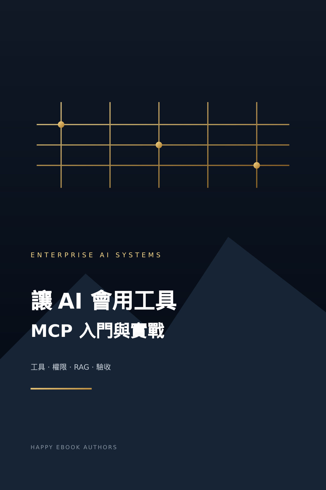

電子書
讓 AI 會用工具：MCP 入門與實戰
電子書介紹

讓 AI 會用工具：MCP 入門與實戰
電子書介紹
《讓 AI 會用工具：MCP 入門與實戰》是由 Happy eBook Authors 撰寫的電子書，提供完整實作與學習內容。
這本書適合誰？
這本書適合想讓 AI 真正讀取外部資料、操作工具的開發者與自動化愛好者。如果你已經會寫提示，但卡在「AI 怎麼安全的用我的檔案與服務」，MCP 是值得補上的一塊。
你會學到什麼
- 理解 MCP 在模型與工具之間扮演的角色，以及它如何限制工具的可見範圍。
- 從一個只讀的小工具開始，練習定義工具說明、參數與回傳格式。
- 處理權限與錯誤：哪些操作要人工確認、呼叫失敗時要怎麼回報給使用者。
- 把工具串成可驗證的工作流，並記錄每次呼叫的輸入輸出，方便日後排查。
怎麼搭配本站內容
可搭配本站 AI 學習路線中的工具與提示章節，先建立「AI 不會自動知道你的資料」的前提，再進入工具串接。
In English: An introduction to MCP (Model Context Protocol): defining tools, limiting permissions, handling failures, and building verifiable AI workflows that safely connect models to external data and services. An original reading guide by Happy eBook.